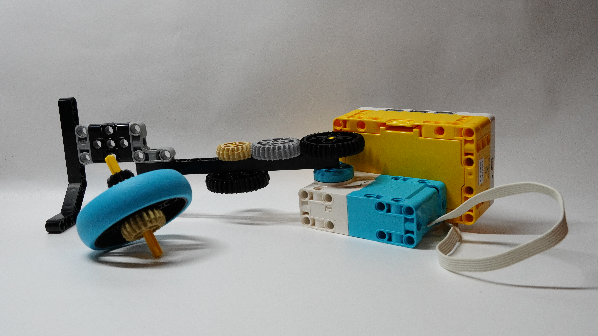
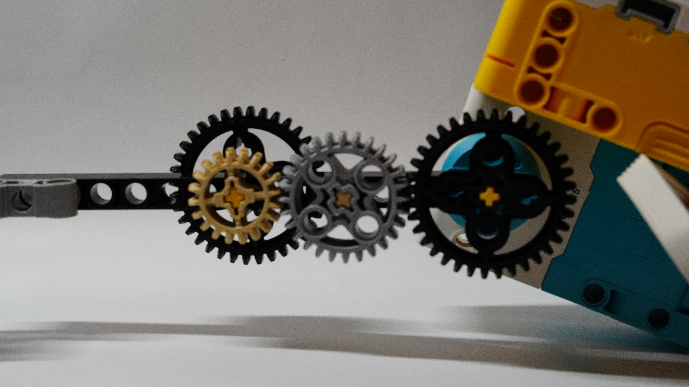

When doing this project I tried to keep gear ratios in mind; Starting from the largest gear with the greatest amount of teeth (36) and making my way to the smallest gear with the least amount of teeth (12). So from the motor I had 36 on the motor and this was all on the same axis 36->28->20 and then on the opposite side I added a 36 since it would be connected to my top spinner that had 12 teeth. I also added a litle handle to the axis to giv eme more balance. With this I successfully created a system of gears to spin my top spinner. However, it's important to note that I didn't really think too much about the design of my top so I could rethink in the future on ways to keep as much angular momentum as possible. Overall, I enjoyed this project and had fun!